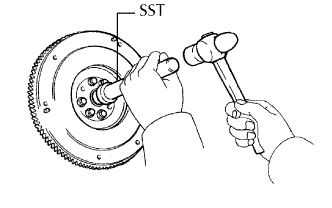
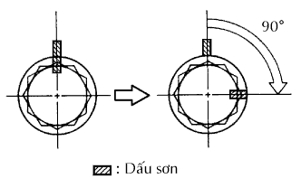
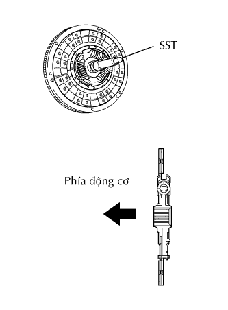
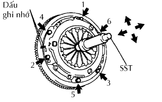
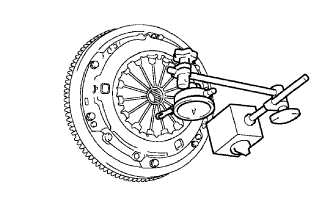
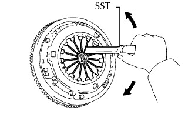
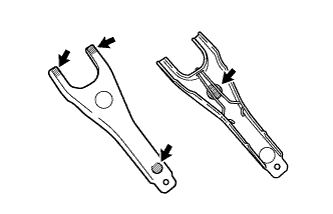
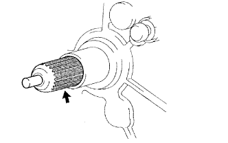

BỘ LI HỢP > LẮP |
| 1. LẮP VÒNG BI PHÍA TRƯỚC TRỤC SƠ CẤP |
|  |
Dùng SST và một búa, đóng vòng bi vào.
Lắp 2 bulông bắt.
|  |
Đánh dấu các bu lông bắt bằng bút sơn.
Xiết chặt bulông bắt đi 90°.
Kiểm tra rằng các dấu sơn bây giờ đã quay đi một góc 90° so với vị trí ban đầu.
| 2. LẮP CỤM ĐĨA LI HỢP |
|  |
Lồng SST vào đĩa li hợp. Sau đó cắm SST (cùng với đĩa li hợp) vào bánh đà.
| 3. LẮP CỤM NẮP LI HỢP |
|  |
Gióng thẳng các dấu ghi nhớ trên nắp li hợp và bánh đà.
Lắp tạm thời 6 bulông.
Hãy xiết chặt 6 bu lông như được chỉ ra dưới đây.
Hãy xác định bu lông cần được xiết bằng cách chọn bu lông gần chốt nhất.
Xiết chặt đều tay 6 bu lông từng cặp đối diện nhau từ vị trí bu lông đầu tiên. Hãy dùng hình vẽ sau để tham khảo.
Dịch chuyển nghẹ nhàng SST lên và xuống, sang trái và sang phải.
Kiểm tra rằng đĩa đã đồng tâm và sau đó xiết chặt các bu lông.
| 4. KIỂM TRA VÀ ĐIỀU CHỈNH CỤM NẮP LI HỢP |
|  |
Dùng đồng hồ so với đầu đo có con lăn, đo độ thẳng hàng của đầu lò xo đĩa.
|  |
| 5. LẮP GIÁ ĐỠ CÀNG CẮT |
Lắp giá đỡ càng cắt li hợp vào cụm hộp số.
| 6. LẮP KẸP MOAYƠ VÒNG BI CẮT LI HỢP |
Lắp kẹp vòng bi cắt li hợp vào vòng bi cắt.
| 7. LẮP CÀNG CẮT LI HỢP |
|  |
Bôi mỡ moayơ vào các vùng sau.
Lắp càng cắt và vòng bi cắt li hợp.
| 8. KIỂM TRA CỤM VÒNG BI CẮT LI HỢP |
|  |
Bôi mỡ then hoa vào then hoa của trục sơ cấp.
Lắp cụm càng cắt li hợp (cùng với vòng bi cắt) vào cụm hộp số thường.
| 9. LẮP CAO SU CÀNG CẮT LI HỢP |
| 10. LẮP CỤM HỘP SỐ THƯỜNG |
Lắp cụm hộp số thường (Xem trang Kích chuột vào đây).
| 11. LẮP CỤM TRỤC CÁC ĐĂNG PHÍA SAU |
Lắp trục cácđăng phía sau (Xem trang Kích chuột vào đây).
| 12. NỐI CÁP VÀO CỰC ÂM ẮC QUY |
| 13. TIẾN HÀNH THIẾT LẬP BAN ĐẦU |
Tiến hành thiết lập ban đầu (Xem trang Kích chuột vào đây).
| 14. KIỂM TRA ĐÈN CẢNH BÁO SRS |
Kiểm tra đèn báo SRS (Xem trang Kích chuột vào đây).